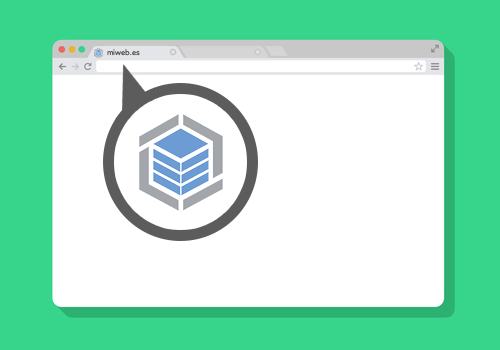

Definiciones
Landingpage
Se denomina página de aterrizaje a una página web a la que tras pulsar en el enlace o
botón en una guía, un portal o algún banner o anuncio de texto situado en otra página web,
aplicación, red social, E-mail o portal de internet.


Linkedln
Es una comunidad social orientada a las empresas, a los negocios y el empleo. Partiendo del perfil
de cada usuario, que libremente revela su experiencia laboral además de sus destrezas, la web pone en contacto
a millones de empresas y empleados.
Comunidades virtuales
Las comunidades virtuales pueden ser muy diversas y específicas, involucrando personas de procedencias alejadas geográfica y culturalmente,
ordenadas en torno a un tema común de su pasión o interés, y un “espacio” virtual que puede estar determinado por una página Web o un servicio Online
Freelance
Un trabajador autónomo, trabajador por cuenta propia o simplemente autónomo, contratista independiente o consultor,
es aquel que trabaja de forma independiente o se dedica a realizar trabajos
Redes sociales
Una red social es una estructura social compuesta por un conjunto de usuarios que están relacionados de acuerdo a algún criterio
Community manager
Es una profesión muy compleja y que aglutina múltiples competencias y habilidades.
Puedes adquirirlas por tu cuenta o acelerar el proceso realizando algún programa de formación para community managers,
pero lo cierto es que es muy probable que aunque tu perfil sea adecuado para este puesto debas prepararte a fondo si quieres convertirte en un auténtico
community manager profesional.

Hosting
Es alojamiento web es el servicio que provee a los usuarios de Internet un sistema para poder almacenar información, imágenes, vídeo, o cualquier contenido
accesible vía web.

Sitio web
Es un espacio virtual en Internet. Se trata de un conjunto de páginas web que son accesibles desde un mismo dominio o subdominio de la World Wide Web.
Es importante establecer que en Internet encontramos una gran variedad de tipos de sitios web que suelen diferenciarse fundamentalmente por la clase de contenido
que ofrecen o por el servicio que brindan a cualquiera de las personas que se encuentran navegando por la Red.
Favicon
Un favicono, del inglés favorites icon, también conocido como icono de página, es una pequeña imagen asociada con una página o sitio web en particular.
Es un símbolo que transmite imagen corporativa, así que sirve para:
Transmitir nuestra imagen de marca cuando alguien navega por nuestra página web y fija su mirada en la zona de la URL del navegador.
Para que nuestra página sea fácilmente identificable cuando alguien tiene abiertas varias pestañas en su navegador.
Para que nuestra página sea fácilmente identificable cuando alguien la guarda en sus favoritos.
